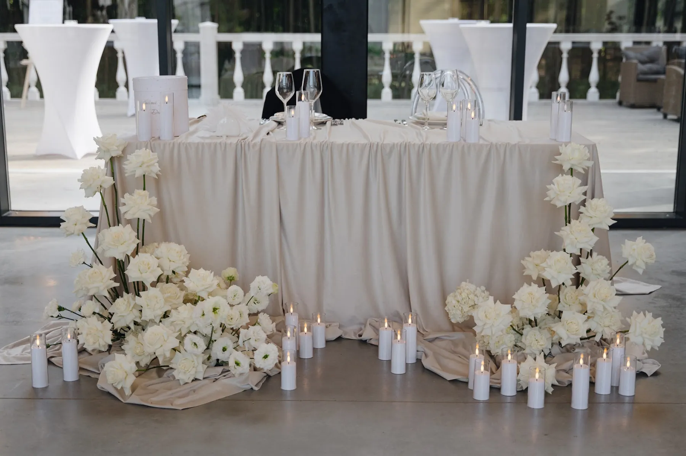
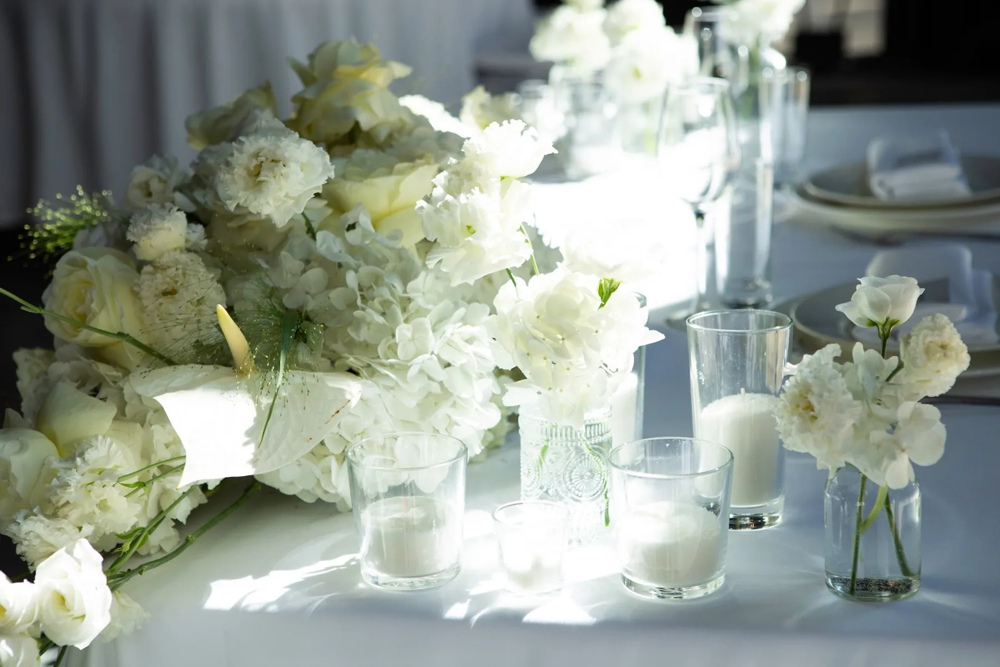

Когда стемнеет, за атмосферу в зале отвечают не цветы, а свет. Свечи делают вечер тёплым, а фотографии — живыми. Рассказываем, где и как их использовать и что важно согласовать заранее.
Где нужны свечи
- Гостевые столы — низкие свечи в стекле вдоль стола или вокруг композиции.
- Президиум — группы свечей разной высоты у подножия цветов.
- Церемония — свечи вдоль прохода или у арки, если она вечерняя или в помещении.
- Велком-зона и фотозона — мягкий свет, чтобы гости хорошо выглядели на фото.


Какие бывают свечи
Высокие тонкие — в подсвечниках, дают вертикаль и торжественность. Столбики — устойчивые, хорошо смотрятся группами. Чайные и плавающие — в стаканах и вазах, самые безопасные на столе. LED-свечи — выручают там, где открытый огонь запрещён или много ткани рядом.


Что согласовать с площадкой
Многие площадки ограничивают открытый огонь — спросите правила заранее. Свечи не ставят вплотную к драпировке, сухим цветам и тканям; на улице берут свечи в стекле, иначе их задует ветер. Продумайте, кто зажигает свечи перед входом гостей и следит за ними в течение вечера.
Совет: попросите фотографа снять зал до входа гостей, когда свечи уже зажжены, — это самые атмосферные кадры декора.
Как заказать
Мы продумываем свет вместе с флористикой: где нужны свечи, какие и сколько. Расскажите о дате и площадке — предложим идею и посчитаем смету.
Частые вопросы
Разрешают ли свечи на свадьбе?
Зависит от площадки: многие разрешают свечи в стекле, но ограничивают открытый огонь. Правила лучше узнать до планирования декора.
Сколько свечей нужно на стол?
Зависит от формы стола и композиции. Свечи обычно группируют вокруг цветов или ставят вдоль длинного стола.
LED-свечи смотрятся дёшево?
Качественные LED-свечи в стекле почти не отличить на фото. Их используют там, где открытый огонь запрещён.